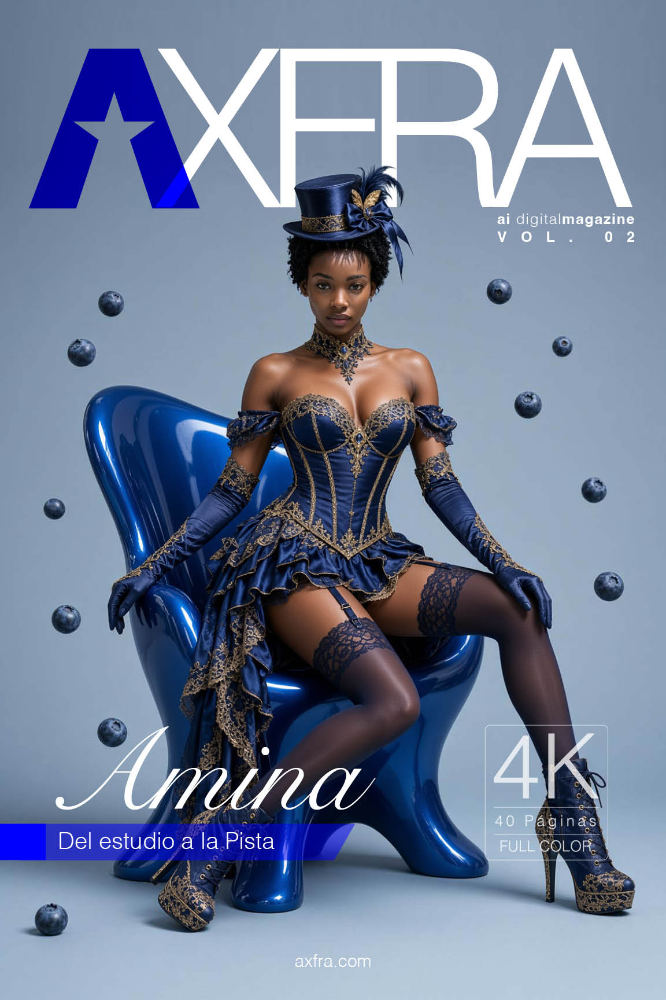
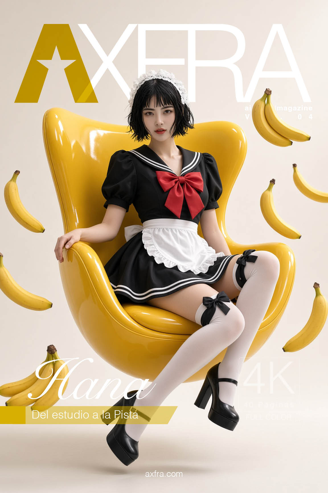
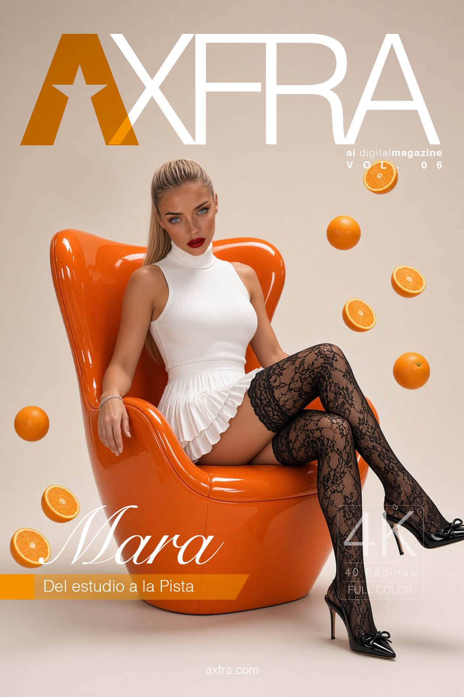
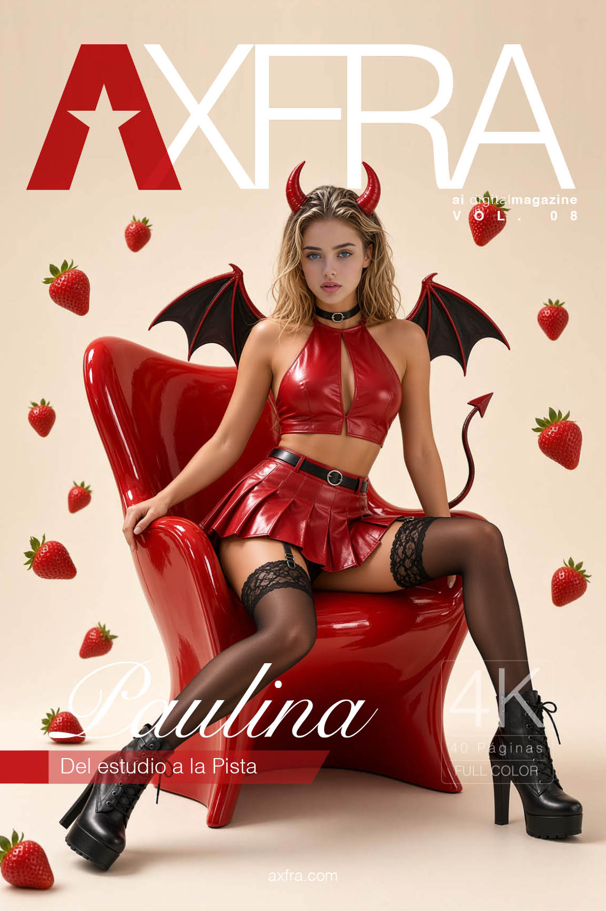
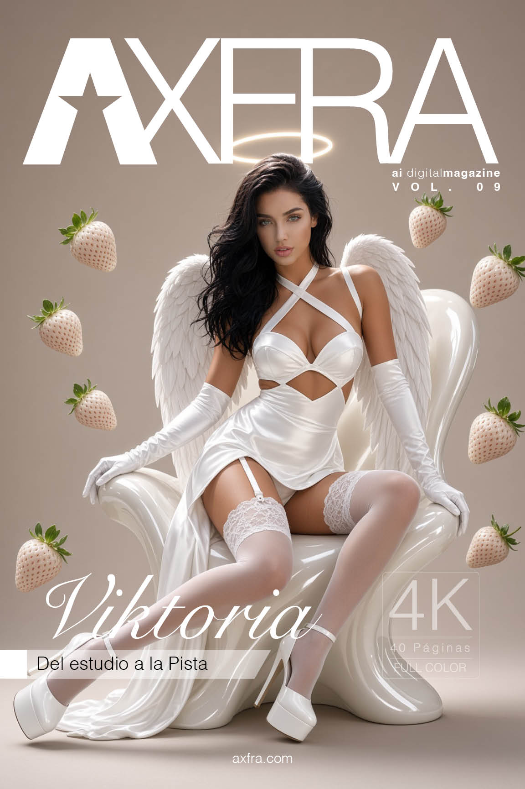

AXFRA MAGAZINE · N.º 01
AXFRA MAGAZINE
Katefa
Del estudio a la pista
Revista digital de moda y cultura visual creada por ALARSI. El primer volumen reúne editoriales de moda, escenas de Chile en oficio y notas que van del pie de manzana al estrés cotidiano.
Edición digital · 42 páginas · PDF en alta resolución

Dentro del número


La colección
Nueve portadas, nueve personajes. Katefa abre la colección.













Tu marca en el próximo número
Creamos una campaña visual para tu producto, pensada para las páginas de AXFRA MAGAZINE.
Publicidad y colaboraciones